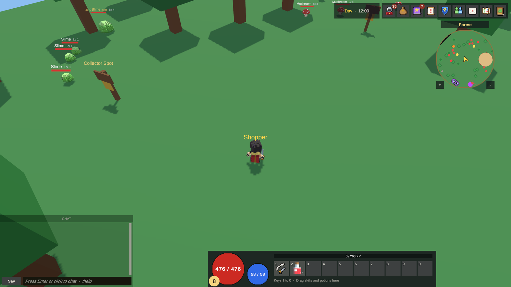

Introducción
KitARPG es un kit de Unity para RPG de acción online al estilo MMO-lite: ciudades compartidas, mazmorras instanciadas, gremios, intercambio y un servidor real detrás. Esta página explica qué es el kit, cómo está construido, para quién es y cómo leer este manual.
Qué es KitARPG

KitARPG, publicado por Blunnyn, te da un RPG de acción completo y jugable que conviertes en tu propio juego. Está hecho para gente a la que le encantan los RPG, desde quienes nunca escribieron una línea de código hasta desarrolladores con experiencia.
Al importarlo obtienes:
- Una muestra Starter que puedes jugar a los pocos minutos de importar: una ciudad, un bosque, una mazmorra (la Sunken Crypt), monstruos, jefes, misiones, tiendas y toda la interfaz.
- Herramientas del editor que te permiten cambiar el juego sin código: la ventana KitARPG con sus páginas Game Database, Game Settings, Modules, Play & Servers y Project Check, más asistentes paso a paso para nuevos modelos de jugador y nuevos monstruos.
- Los servidores: Login, Central y el Shop opcional, escritos en .NET 10, más un lanzador que levanta todo con un clic.
- Un DevKit para cuando quieras escribir código: plantillas, eventos, métodos virtuales y una función de ejemplo completa construida sin tocar el kit.
Dos formas de correr el mismo juego
El mismo proyecto de Unity y las mismas escenas corren de dos formas. Eliges una en el Setup Wizard y puedes cambiarla después en Play & Servers.
| Modo | Quién corre qué | Guardado | Qué necesitas |
|---|---|---|---|
| Un jugador | El juego hospeda su propio mundo. La computadora del jugador es cliente y servidor a la vez | Un archivo SQLite en la computadora del jugador | Solo Unity |
| MMO | Los jugadores inician sesión en tus servidores: un servicio Login, un servicio Central y un servidor de Unity por mapa | Una base de datos: SQLite en una sola computadora, PostgreSQL en producción | Unity y el SDK de .NET 10 |
El código de mapa es idéntico en los dos. Un juego de un jugador puede convertirse en MMO más adelante: cambias el modo, compilas los servidores y conservas cada mapa, ítem y misión que hiciste.
Cómo funciona una sesión MMO
No necesitas saber esto para jugar la muestra, pero ayuda cuando algo sale mal.
- Inicio de sesión. El cliente envía un nombre de usuario y una contraseña al servicio Login por HTTP (HTTPS en producción). Login revisa el hash de la contraseña y responde con un token de vida corta y la lista de personajes.
- Elegir un personaje. El cliente le pide a Central jugar con un personaje. Central responde con la dirección del servidor de mapa de ese personaje y un ticket que sirve una sola vez y vence a los 30 segundos.
- Entrar al mapa. El cliente se conecta al servidor de mapa con Mirror (UDP, transporte KCP) y muestra el ticket. El mapa lo verifica con Central, carga el personaje y lo hace aparecer.
- Jugar. El cliente solo pide; el servidor decide todo. El mapa guarda el personaje cada 60 segundos, cuando sale y cuando cambia de mapa.
- Cambiar de mapa. Un portal guarda el personaje y le pide a Central un ticket para el siguiente mapa. Central levanta ese servidor de mapa si todavía no está corriendo. El cliente muestra una pantalla de carga y se conecta al nuevo mapa.
Una sesión por cuenta: si alguien vuelve a iniciar sesión con la misma cuenta, la sesión anterior se cierra. La página Arquitectura entra en más detalle.
Principios de diseño
Estas decisiones atraviesan todo el kit. Conocerlas explica muchos comportamientos que vas a ver.
- El servidor decide. Cada acción es un pedido. El daño, el botín, los precios, los intercambios y el avance de las misiones se calculan en el servidor. Un cliente modificado no gana nada.
- Cada copia de un ítem tiene un solo dueño. En el MMO, los ítems viven en una sola tabla y cada copia pertenece exactamente a un personaje, una cuenta, un gremio, una carta, un recaudador o un lote del mercado. Los movimientos entre dueños se hacen en transacciones de la base de datos, así que los ítems no se pueden duplicar.
- Datos, no código. Las clases, ítems, skills, monstruos, misiones y mapas son assets que se editan en la Game Database. Cada uno tiene un id de texto, como
fire_bolt, que no cambia nunca una vez creado. - El kit se mantiene de solo lectura. Pones tu contenido y tu código en tus propias carpetas. Las actualizaciones del kit agregan lo que trae una versión nueva sin sobrescribir lo que cambiaste.
- Números enteros. Las bonificaciones de stats son siempre números enteros, y los porcentajes son puntos enteros.
- Las builds llevan solo su propio código. Un cliente MMO no tiene código de servidor, comandos de GM, guardado local ni claves. El editor lo revisa antes de cada build.
Para quién es este manual
| Eres | Empieza por |
|---|---|
| Nuevo en Unity o en kits de RPG | Requisitos, Instalación, Setup Wizard, y luego Inicio rápido: un jugador |
| Alguien que crea contenido sin código | El editor y Contenido del juego |
| Quien corre los servidores | Inicio rápido: MMO, y luego Servidores y despliegue |
| Quien escribe código | Resumen del DevKit |
| Quien busca una tecla, un comando o un error | Teclas, Comandos de GM, Solución de problemas |
Cómo está organizado este manual
| Sección | Qué cubre |
|---|---|
| Primeros pasos | Requisitos, instalación, el Setup Wizard, tu primer juego en cada modo, las carpetas del kit y cómo actualizarlo |
| El editor | La ventana KitARPG y cada una de sus páginas, más cada elemento del menú |
| Contenido del juego | Clases, atributos, modelos, ítems, skills, monstruos, botín, mapas, NPCs y misiones |
| Sistemas de juego | Modos de control, combate, inventario, intercambio, gremios, correo, el mercado, PvP, mazmorras, la tienda del juego, herramientas de GM y el HUD |
| Servidores y despliegue | Login, Central, el lanzador, bases de datos, builds, Docker, seguridad y el servicio Shop |
| DevKit | Extender el kit en C# sin editarlo |
| Referencia | Teclas, comandos de GM, preguntas frecuentes, solución de problemas, glosario y registro de cambios |
Convenciones
- Las rutas de menú van en negrita con
>: KitARPG > Setup Wizard. - Los nombres de campo van en código:
autoGold. La etiqueta que muestra el inspector va en cursiva con su campo la primera vez: Auto Gold (autoGold). - Las teclas se escriben como
Ctrl/Cmd+Shift+K:Ctrlen Windows y Linux,Cmden Mac. - Las rutas que empiezan con
Assets/están dentro de tu proyecto de Unity.UserSettings/KitARPG/también está dentro de la carpeta del proyecto, junto aAssets, y nunca se distribuye.
Páginas relacionadas
- Funciones: todo lo que hace el kit, sistema por sistema.
- Requisitos: qué instalar antes de empezar.
- Glosario: las palabras que usa este manual.